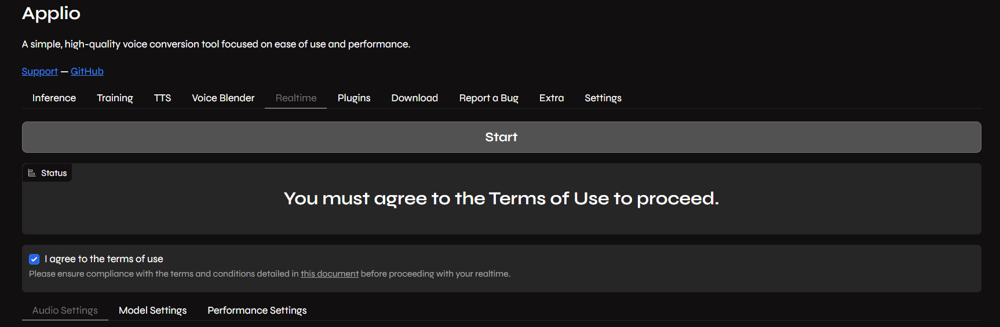
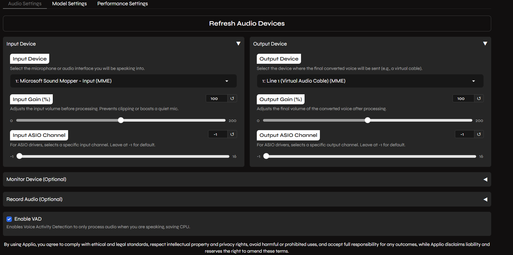
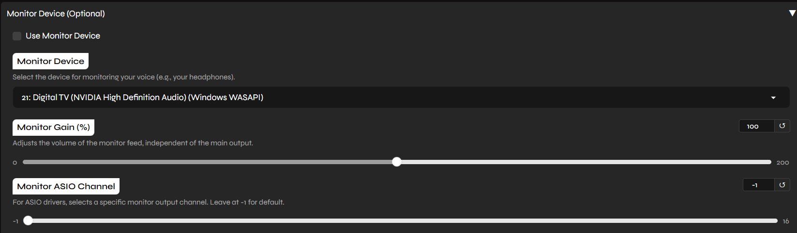
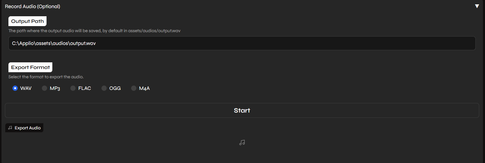
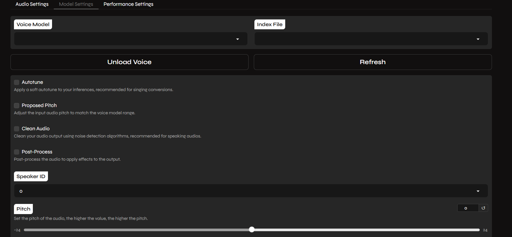
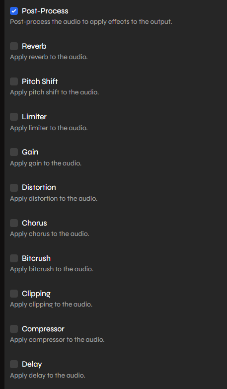
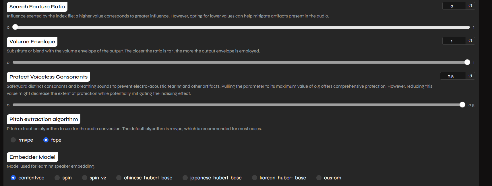
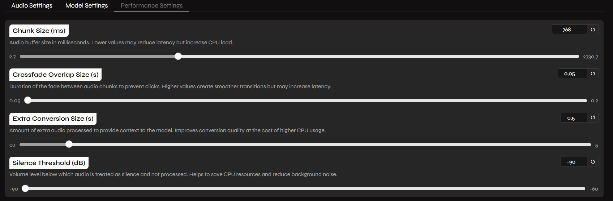

Applio Realtime
Last update: March 14, 2026
Introduction
Applio is an all-in-one RVC (Retrieval-based-Voice-Conversion) software that in v3.5.0 introduced a powerful Realtime tab for live voice changing.
This guide focuses on the Applio Realtime interface, for Realtime Voice Changing. It will link to the guides to setup Applio.
RVC does NOT mean Realtime Voice Changer. RVC means Retrieval-based-Voice-Conversion.
Is Applio Safe?
RVC Models are PyTorch Models, a Python library used for AI. PyTorch uses serialization via Pythons' Pickle Module, converting the model to a file. Since pickle can execute arbitrary code when loading a model, it could be theoretically used for malware, but Applio has a built-in feature to prevent code execution along the model. Also, HuggingFace has a Security Scanner which scans for any unsafe pickle exploits and uses also ClamAV for scanning dangerous files.
Pros & Cons
The pros & cons are subjective to your necessities.
- Highly active development and frequent feature updates
- Uses a Web User Interface, meaning it can be run on the Cloud
- Excellent support for Nvidia (CUDA), AMD (ROCm), and Intel
- Supports the latest RVC V2 advancements and embedders
- Includes powerful audio effect racks
- Might not be as good as Vonovox and Wokada Tg Develop Fork as Realtime isn't its entire focus.
Virtual Audio Cable
A Virtual Audio Cable (VAC) is what you need to use the realtime voice changer on Discord & Games.
- A VAC (Virtual Audio Cable) makes a fake audio device, used to re-route the audio of different programs.
- In AI Realtime Voice Changing context, it's used to get the output of AI Converted Voice Output as the input in other programs such as Discord.
For Windows
Download this: VAC Lite (Virtual-Audio-Cable by Muzychenko). (Be sure to not use any toher vac like VB Audio Cable.)
Run
setup64, not 64a, after extracting the zip to a new folderAfter installing the VAC Lite, it changes your default audio system. Click Yes when it asks you to open the audio device settings (or press WIN+R, type "mmsys.cpl" if you closed it already), and change your Recording and Playback devices back to your usual devices. Same for communications device aswell (right click -> set as default communication device)
For Mac
Download either: Blackhole Virtual Audio Cable or VB-Audio
For Linux
For Debian / Ubuntu-based Systems (Ubuntu, Mint, Pop!_OS), run in the terminal:
sudo apt-get update && sudo apt-get install -y portaudio19-devFor Fedora / RHEL-based Systems (CentOS, Rocky Linux), run in the terminal:
sudo yum install -y portaudioFor Arch / Arch-based Systems (Endeavour, Manjaro Linux), run in the terminal:
sudo pacman -Syu portaudioGet & Start Applio
- Install and Run Applio according to the main Applio installation guide.
- Upload your RVC Voice Model.
- Navigate to the Realtime tab in the top navigation menu.
- You must agree to the Terms of Use before the settings become accessible.+
- After you adjust the Settings, you can click start and will be able to use it shortly after!

Settings Explained
1. Audio Settings

- Input Device: Your microphone.
- Output Device: Your Virtual Audio Cable.
- Input Gain (*): Adjusts the input volume before processing. Prevents clipping or boosts a quiet mic.
- Output Gain (*): Adjusts the final volume of the converted voice after processing.
- Input ASIO Channel: For ASIO drivers, selects a specific input channel. Leave at -1 for default.
- Output ASIO Channel: For ASIO drivers, selects a specific output channel. Leave at -1 for default.
- Enable VAD: Highly recommended to save CPU/GPU resources by processing audio only when you speak.

- Monitor Device (Optional): Select your headphones if you wish to hear yourself live.

- Record Audio (Optional): Use this to save your live conversion output directly to a file.
2. Model Settings
The Model Settings tab is split into two sections:
Part 1: Voice Selection

- Voice Model / Index: Select your model and corresponding index.
- Pitch: Adjusts your vocal pitch (-24 to +24).
- Processing: Toggle Autotune, Proposed Pitch, and Clean Audio as needed for your specific vocal style.

- Post-Proces: Multiple Audio Effects such as:
- Reverb
- Pitch Shift
- Limiter
- Gain
- Distortion
- Chorus
- Bitcrush
- Clipping
- Compressor
- Delay
Bitcrush Error on V3.6.2:
The Bitcrush Post Process Option seems to give users an error when enabled on Applio V3.6.2. A fix has been pushed in the main branch and will be available in the Next Applio Release.
Part 2: Advanced Tuning

- Search Feature Ratio: Controls index influence; higher values improve trained accent accuracy but may not work if you speak a different language than the model was trained in.
- Volume Envelope: Blends the output volume with the original.
- Protect Voiceless Consonants: Set to 0.33 to safeguard breathing sounds and prevent robotic tearing.
- Pitch Algorithm: Select
rmvpefor best quality orfcpefor lower latency. - Embedder Model: Choose your model's required embedder (ContentVec, Spin, etc.).
3. Performance Settings

- Chunk Size (ms): Lower values reduce latency but increase CPU load.
- Crossfade Overlap Size (s): Prevents "clicks" in audio transitions.
- Extra Conversion Size (s): Provides context to the model to improve quality.
- Silence Threshold (dB): Fine-tune the VAD sensitivity.
Troubleshooting
If you are experiencing lag, stuttering, or slow training speeds, disable HAGS (Hardware-Accelerated GPU Scheduling) on Windows 10/11. It is known to interfere with VRAM management for Local AI apps. Read the HAGS Glossary Entry for the full explanation and how to disable it.
- This usually happens when the GPU is overloaded. Try increasing your Chunk Size in the settings.
- Ensure your sample rates are matched in Windows Sound Settings (48kHz).
- Report your issue here.
FAQ
Why does it run in a browser? Applio uses a Web User Interface (WebUI) coded in Gradio, allowing the tool to run consistently across local and cloud environments.
What browser should I use?
It's better you try and test, some people had issues on Chrome, some others on Firefox, it might depend on the settings you use and also Java/Type Script having issues. The browser that usually is reported by most people to have issues is OperaGX, which is why we don't suggest it much.
Why are most YouTube (Video) Tutorials old? Is there going to be an updated one?
YouTube Tutorials take way more time to make, and get outdated easily in this case, as AI progresses fast and continues to change in better, with more different settings and versions. Written guides are easier to update, since you don't have to remake an entire video. It's unknown if we will ever release a video since they easily get outdated, but if we will, it will be linked inside of this guide.
Do I need an extremely expensive mic for good quality?
We had a conversation about this in https://discord.com/channels/1159260121998827560/1159290161683767298/1352325982689951765 & https://discord.com/channels/1159260121998827560/1159290161683767298/1356265862704926907, RVC works by downsampling your audio voice to 16khz because f0 estimators only works at that sample rate, after that the model outputs the results using it's original sample rate (without any upscaling). So there won't be the need of having a super extremely expensive, a decent one should do the job.
Are there unique Voice Models?
RVC Voice Models need to be trained on something, so the models themselves can't be unique, but you can use the Voice Blender to create a new unique merged model.